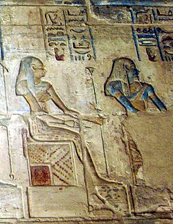
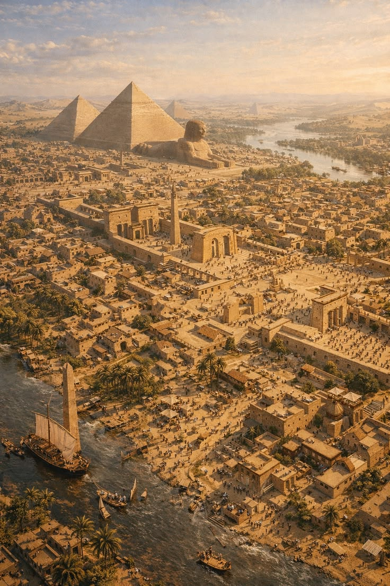
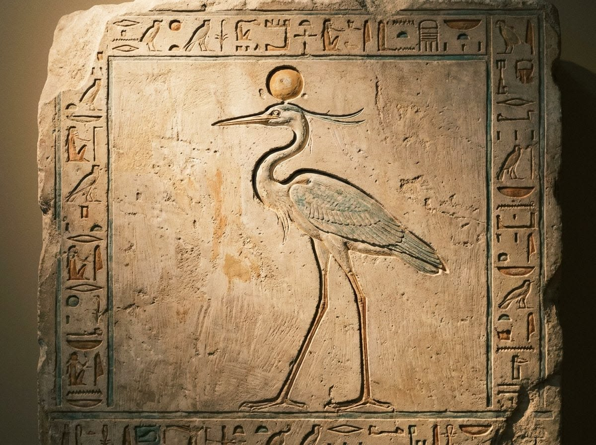
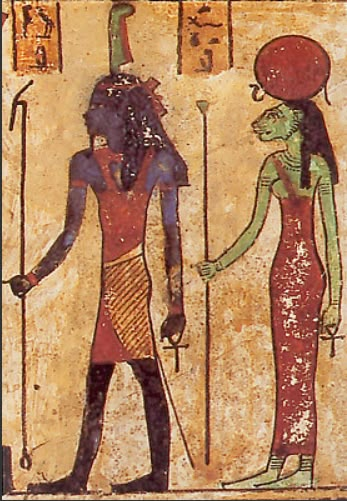
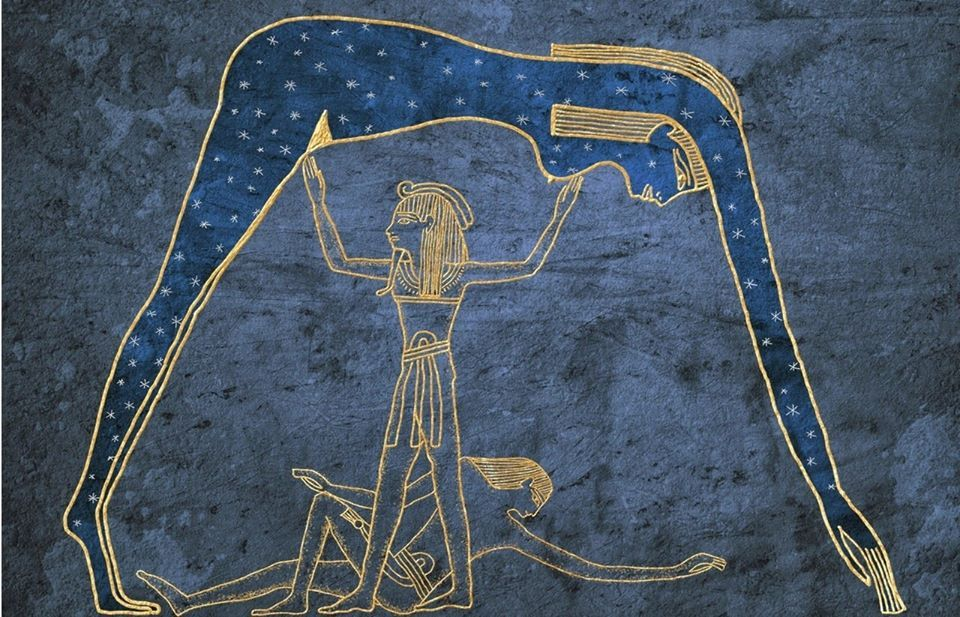
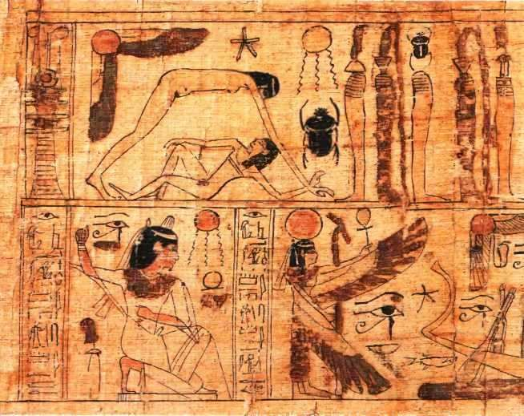

Ra
Dio del sole, creatore di tutto e re degli dèi.
Un viaggio tra gli dèi, i miti e i simboli dell'antico Egitto.
La mitologia egizia raccoglie storie millenarie dedicate a divinità potenti, misteri dell'aldilà e grandi lotte cosmiche. Questi racconti spiegavano il ciclo del sole, la fertilità della terra e le leggi che regolavano la vita e la morte.

Dio del sole, creatore di tutto e re degli dèi.
Signore dell'Oltretomba e giudice dei morti.
Dea della magia, della maternità e della fedeltà.
Dio falco del cielo e protettore dei faraoni.
Dio sciacallo della mummificazione e dei defunti.
Dio del caos, del deserto e delle tempeste.
Dio della sapienza, della scrittura e della luna.
Dea dell'amore, della musica, della gioia e della bellezza.
Dea leonessa della guerra e della potenza guaritrice.
Dio primordiale della terra.
Dea del cielo, madre delle stelle e del sole.
Dea gatto protettrice della casa, della famiglia e dei gatti.
Prima dell'ordine del mondo, regnava l'oceano primordiale del caos. Da esso emerse Ra, il grande dio creatore, che con la sola forza della sua volontà diede vita all'aria, all'acqua e alla terraferma. Per illuminare la sua creazione, Ra decise di compiere ogni giorno un viaggio straordinario a bordo della sua barca celeste, attraversando la volta del cielo dall'alba al tramonto e portando calore e vita a tutto l'Egitto.
Tuttavia, il lavoro del re degli dèi non si fermava con la discesa della notte. Quando il sole tramontava, la barca solare di Ra entrava nel Duat, il misterioso e pericoloso regno sotterraneo dell'oltretomba. Qui il dio doveva affrontare ogni singola notte insidie terribili, tra cui il gigantesco serpente del caos Apep, che cercava con ogni mezzo di divorare la barca e spegnere per sempre la luce del sole.
Grazie all'aiuto di altre divinità protettrici che viaggiavano con lui, Ra riusciva sempre a sconfiggere o respingere il mostro prima dell'alba. Questa vittoria quotidiana rappresentava per gli Egizi la certezza assoluta che la luce avrebbe sempre trionfato sulle tenebre, che l'ordine avrebbe sconfitto il caos e che ogni notte sarebbe stata seguita da un nuovo risveglio.
Il culto di Ra era strettamente legato al potere dei faraoni, i quali venivano considerati i suoi figli terreni e i suoi rappresentanti prediletti. Costruire enormi obelischi e templi rivolti verso oriente era il modo con cui il popolo e i sovrani onoravano la sua potenza creatrice, sperando di ottenere la sua benevolenza sia nella vita terrena che nell'eternità.

L'oceano primordiale infinito da cui tutto ebbe origine prima della luce.

Il primo lembo di terra emerso dalle acque in cui gli dèi si manifestarono.

La creatura sacra simile a un airone, simbolo di rinascita e primo raggio di sole.

Le prime divinità generate da Ra, rappresentanti l'aria secca e l'umidità.

La terra e il cielo, separati per sempre dal padre Shu per permettere la vita.

Nati dalle lacrime di gioia di Ra cadute sulla terra fertile del Nilo.

Osiride un tempo regnava sull'Egitto come un sovrano saggio e generoso, insegnando agli uomini l'arte dell'agricoltura, le leggi civili e il rispetto per gli dèi. Sotto il suo governo la terra prosperava e regnava la pace, ma questa felicità scatenò la feroce gelosia di suo fratello Seth, dio del caos e della distruzione.
Con un inganno crudele, Seth organizzò un complotto, intrappolò Osiride in un sarcofago perfetto e lo gettò nelle acque del fiume Nilo, uccidendolo. Successivamente ne fece a pezzi il corpo, disperdendone i frammenti in ogni angolo d'Egitto per impedire che potesse avere una sepoltura sacra e un riposo eterno.
La moglie Iside, mossa da un amore smisurato e dotata di immensi poteri magici, viaggiò in lungo e in largo per raccogliere tutti i pezzi del marito. Con l'aiuto di Anubi, ricompose il corpo e lo rese il primo essere mummificato della storia, ottenendo il miracolo di riportarlo temporaneamente in vita. Non potendo più regnare tra i vivi, Osiride discese nell'Oltretomba, diventando il supremo giudice delle anime e il simbolo eterno della resurrezione e della rinascita della natura attraverso le piene del Nilo.

Anubi, la divinità dalla testa di sciacallo, era strettamente legato al mistero della morte e alla protezione delle necropoli. Secondo la tradizione mitologica, era figlio di Nefti e di Osiride, ed era stato allevato amorevolmente da Iside dopo la morte del padre. Grazie alla sua vicinanza alla famiglia reale degli dèi, Anubi divenne il custode ufficiale dei riti funebri.
Il suo compito più importante e temuto si svolgeva nella Sala delle Due Verità, il tribunale divino dell'aldilà. Quando l'anima di un defunto giungeva al cospetto degli dèi, Anubi accompagnava con delicatezza il cuore del defunto e lo posizionava su un piatto di una grande bilancia d'oro.
Sul piatto opposto della bilancia veniva posta la piuma della dea Maat, che rappresentava la verità, la giustizia e l'armonia cosmica. Se il cuore del defunto era leggero e puro, non appesantito da cattive azioni commesse in vita, la bilancia rimaneva in perfetto equilibrio.
A quel punto Anubi presentava l'anima vittoriosa a Osiride, permettendole di accedere ai Campi Iaru, un paradiso eterno ricco di abbondanza e pace. Se invece il cuore risultava corrotto e pesante, veniva immediatamente divorato da una fiera mostruosa, condannando l'anima alla cancellazione definitiva.
Grazie a questo ruolo fondamentale, Anubi era il dio più invocato durante i processi di mummificazione, poiché i sacerdoti indossavano maschere con le sue sembianze per guidare e proteggere il corpo del defunto nel suo viaggio verso l'eternità.

Iside era considerata la regina della magia, la dea della maternità e la protettrice di tutte le famiglie e dei naviganti. Dotata di un'intelligenza straordinaria e di poteri magici superiori a quelli di qualsiasi altro dio, era venerata in tutto il Mediterraneo antico come simbolo di devozione e forza femminile.
La sua storia è indissolubilmente legata alla tragedia e alla rinascita di Osiride. Quando il marito fu tradito e ucciso da Seth, Iside non si lasciò abbattere dal dolore: trasformandosi in un falco protettivo, volò sopra le paludi del delta del Nilo alla ricerca dei frammenti del corpo perduto, dimostrando un coraggio senza eguali.
Fu lei a inventare i primi riti di imbalsamazione e a ridare vita a Osiride attraverso la sua potente magia, proteggendo inoltre nel profondo delle paludi il loro giovane figlio Horus, affinché un giorno potesse vendicare il padre e riprendersi il trono legittimo d'Egitto.
Inoltre, un celebre mito racconta di come Iside riuscì a ingannare il potentissimo Ra per carpire il suo nome segreto e ottenere così il controllo sui poteri supremi dell'universo, salvandolo però in cambio da un morso velenoso e dimostrandosi saggia oltre che potente.
In questo modo, Iside divenne la madre divina per eccellenza, protettrice dei bambini, guaritrice dei malati e guida sicura per chiunque cercasse protezione contro le avversità della vita e della morte.